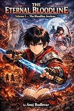
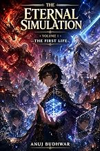
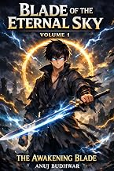
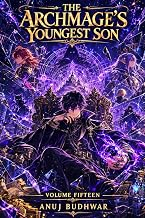
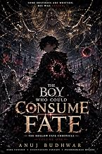
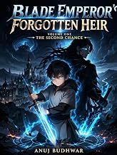

The Eternal Bloodline
He lived. He died. And then… he returned. Ren Hao possesses an eternal inheritance that lets him be reborn within his own bloodline. With th…
Open series →
Void Sovereign Saga
They betrayed him. They killed him. They erased his name from history. But they made one mistake… He came back. Kael was once the Void Emper…
Open series →
The Return of the Ash-Bound Sovereign
He died as House Valdris's most expendable blade. He returned as its youngest nightmare. Lucian Van Valdris spent forty years serving as the…
Open series →
The Ashen Mage Ascendant
For three years, Rael Varn was mocked as the weakest mage in the Verdant Magic Academy. Despite possessing a fire affinity, he could barely …
Open series →
The Eternal Simulation
One life is never enough. Kael Soran awakens with an impossible gift—the power to return to the beginning of his life while retaining every …
Open series →
Blade of the Eternal Sky
He was once the greatest genius of his generation. At just fourteen, Kai Ren stood at the peak of power, admired by all and feared by many. …
Open series →
The Revenant Knight
He had a talent. A talent for ruining everything. Zael Vornath — the disgrace of a noble family — wasted his life in arrogance, bringing rui…
Open series →
Archmage's Youngest Son
Lucien Valenstar has crossed a line that cannot be undone. No longer bound by the expectations of his family or the authority of the Elder C…
Open series →
The Starless Grimoire
The sky broke the day Zane Mirvel died. Purple and black tore across the heavens. The Veil shattered. And from beyond it came Malachar the D…
Open series →
The Boy Who Could Consume Fate
What if fate simply... forgot you? Every child born in Veyr Hollow is bound by the Great Fate Loom. Every life is measured. Every future is …
Open series →
Blade Emperor’s Forgotten Heir: The Second Chance
He died betrayed. After spending thirty-one years building power, alliances, and a future… Kael Ardenthorn was murdered by his own brothers.…
Open series →
The Science of Clear Thinking
Why do intelligent people make terrible decisions? Every day we make choices about money, relationships, careers, and health. We believe we …
Open series →